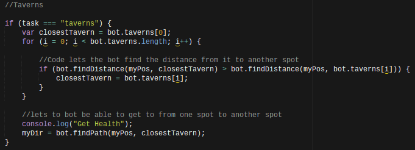

Vindinium is a four player programming game where you have to code your own bot to participate in the game. Your goal as a bot is to collect as much gold as possible while being attacked and stolen from other bots as well. How you do and how the other bots do all depends on how well you code your commands. To first show you how to make your own bot the section below is my code:
var Bot = require('bot');
var PF = require('pathfinding');
//var bot = new Bot('j4vtsz15', 'training', 'http://vindinium.org'); //Put your bot's code here and change training to Arena when you want to fight others.
var bot = new Bot('lqu0vibf', 'arena', 'http://52.39.33.197:9000'); //Put your bot's code here and change training to Arena when you want to fight others.
var goDir;
var Promise = require('bluebird');
Bot.prototype.botBrain = function() {
return new Promise(function(resolve, reject) {
_this = bot;
//////* Write your bot below Here *//////
//////* Set `myDir` in the direction you want to go and then bot.goDir is set to myDir at the bottom *////////
/* *
* This Code is global data! *
* */
// Set myDir to what you want and it will set bot.goDir to that direction at the end. Unless it is "none"
var myDir;
var myPos = [bot.yourBot.pos.x, bot.yourBot.pos.y];
var enemyBots = [];
if (bot.yourBot.id != 1) enemyBots.push(bot.bot1);
if (bot.yourBot.id != 2) enemyBots.push(bot.bot2);
if (bot.yourBot.id != 3) enemyBots.push(bot.bot3);
if (bot.yourBot.id != 4) enemyBots.push(bot.bot4);
var availbleMines = [];
if (bot.yourBot.id != 1 && bot.bot1.mineCount > 0) availbleMines.push(bot.bot1mines);
if (bot.yourBot.id != 2 && bot.bot2.mineCount > 0) availbleMines.push(bot.bot2mines);
if (bot.yourBot.id != 3 && bot.bot3.mineCount > 0) availbleMines.push(bot.bot3mines);
if (bot.yourBot.id != 4 && bot.bot4.mineCount > 0) availbleMines.push(bot.bot4mines);
for (i = 0; i < bot.freeMines.length; i++) {
availbleMines.push(bot.freeMines[i]);
}
/* *
* This Code Decides WHAT to do *
* */
var task;
// task = "taverns";
//If bot's health is less than or equal to 40, it goes to the taverns
if (bot.yourBot.life <= 40) {
task = "taverns";
}
//If bot's life is greater than or equal to Enemy's life the bot attacks it
else if(bot.yourBot.life >= closeEnemy) {
task = "attackCloseBot";
}
//If the bot has 1 or less mines it takes other mines
else if(bot.yourBot.mineCount < 1){
task = "takeMines";
}
//If not, bot continues to mine
else {
task = "freemines";
}
/* *
* This Code Determines HOW to do it *
* */
// This Code find the nearest taverns and sets myDir toward that direction //
if (task === "freemines") {
var closestMine = bot.freeMines[0];
for (i = 0; i < bot.freeMines.length; i++) {
if (bot.findDistance(myPos, closestMine) > bot.findDistance(myPos, bot.freeMines[i])) {
closestMine = bot.freeMines[i];
}
}
console.log("Claiming a Free Mine!");
myDir = bot.findPath(myPos, closestMine);
}
//Taverns
if (task === "taverns") {
var closestTavern = bot.taverns[0];
for (i = 0; i < bot.taverns.length; i++) {
//Code lets the bot find the distance from it to another spot
if (bot.findDistance(myPos, closestTavern) > bot.findDistance(myPos, bot.taverns[i])) {
closestTavern = bot.taverns[i];
}
}
//lets to bot be able to get to from one spot to another spot
console.log("Get Health");
myDir = bot.findPath(myPos, closestTavern);
}
//Attack
if (task === "attackCloseBot") {
var closeEnemy = enemyBots[0];
for (i = 0; i < enemyBots.length; i++) {
//Allows the bot to find the closest bot
if (bot.findDistance(myPos, [closeEnemy.pos.x, closeEnemy.pos.y]) > bot.findDistance(myPos, [enemyBots[i].pos.x, enemyBots[i].pos.y])) {
closeEnemy = enemyBots[i];
}
}
//Allows bot to attack the closest enemy
console.log("Attacking close enemy");
myDir = bot.findPath(myPos, [closeEnemy.pos.x, closeEnemy.pos.y]);
}
//Path to Mines
if (task === "takeMines") {
var closestMines = availbleMines[0];
for (i = 0; i < availbleMines.length; i++) {
//Allows the bot to find the distance from one place to another place
if (bot.findDistance(
In order to start coding your bot, you need to be able to tell the bot what to do. There are two main actions your bot could do: going to taverns and attacking an enemy player. Both are these are very helpful because after attacking a player, your bot's health gets lower. The only way to revive your health is by going to the taverns. Because you aren't able to control your bots manually, you have to code it's actions beforehand.
The if statement works by going through the entire conditon to see if it qualifies. If the conditon is qualified, then it would do the task as it's told. If it doesn't qualify, then it would move on to the else if statement
The else if statement only operates if the if statement before hand is false. As you can see in the images, it would go to the next if statement if the bot's health is lower than 40, but if not then it would attack the closest bot. But if the bot's mine count is over 1, it will then go one to the else statement. If not, then it will takes the closest mines.
If all the other statements above are false, then it would go on to the else statement. In my code, it would continue to get mines.
If my bot wants to be able to go to the closest tavern, it would need to know how to get there. When making the if statements here, you have to make sure the task is equal to the string you made from your earlier statements. Because I made a string called "taverns" for my previous if statement, I'd have to make one also called "taverns" for it to work together.
The codeblock I made for this helps my bot find the closest tavern there to revive it's health. In order to find the closest tavern, it would run through the "for" loop to find the distances between each tavern and choose whatever is closest. For each for loop, there are a total of 3 statements. Each statement does something different. The first statement determines the first option of the array. The second statement determines the amount of possiblities it could run through. The thrid statement determines how you want it to run through the lists. My thrid statement, i++, makes the check the next option each time. After it determines an option from the array, it would go to the if statement. The if statement in my code compares the distance between the first option on the array and the current detecting option. If the first option is closer, then it would continue with it, otherwise it would go with the current option and replace the previous closest tavern. It wil go through each option until the closest tavern is identified. After finding the for loop that has the closest tavern, it would continue on to the console.log, which will then direct the bot to the tavern it chose.
Although my bot was able to do what I wanted it to do, it was difficult to get where I am now. Making the bot was definitely challenging to me. Though by going through the process, I was able to learn about the general idea of AI. My opinion on AI, however, hasn't changed that much because I did believe that learning about AI would be very difficult, and it was. But going through the whole process has helped me get a deeper understanding of coding.